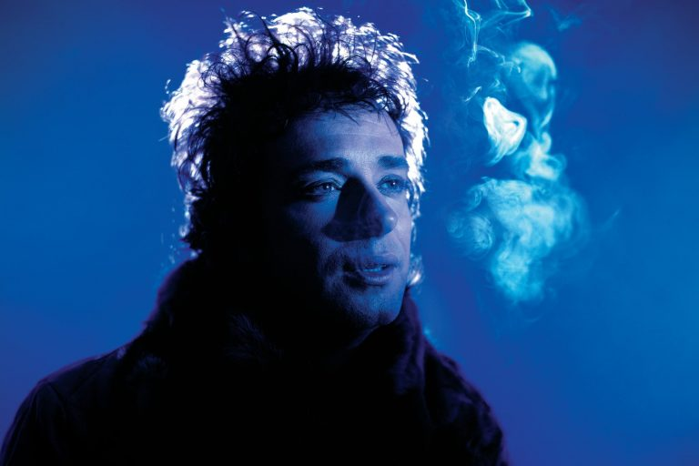
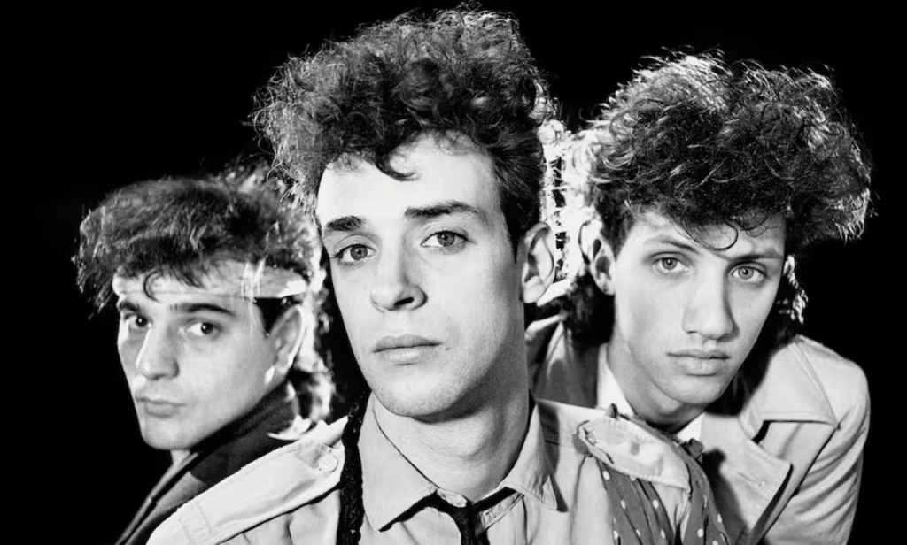
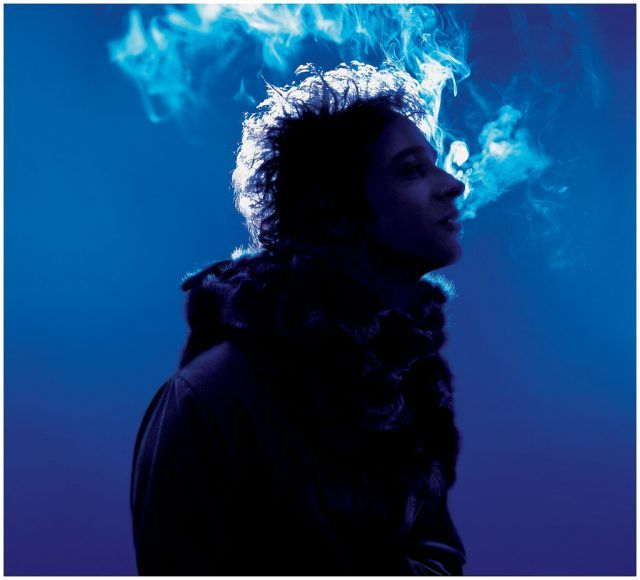
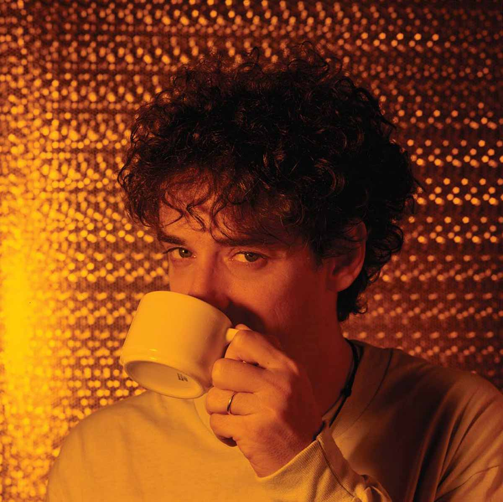
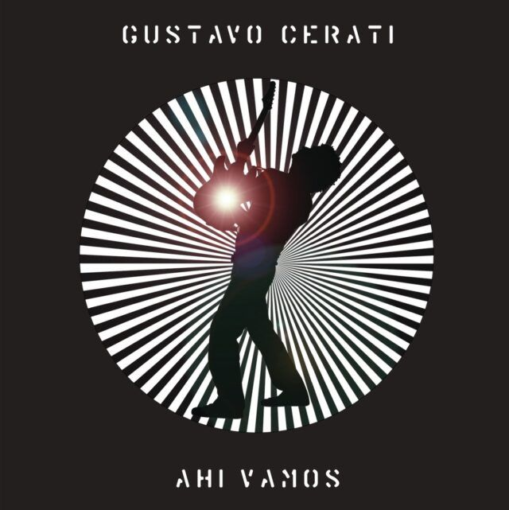
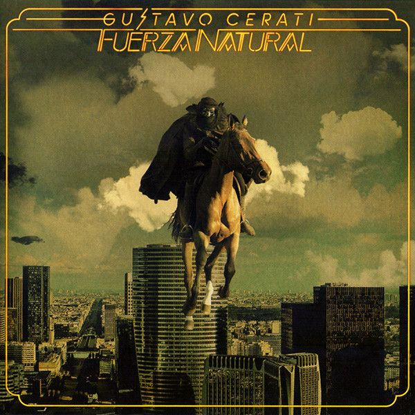

Gustavo Adrián Cerati nació el 11 de agosto de 1959 en Buenos Aires, Argentina. Desde pequeño estuvo relacionado con la música y comenzó a estudiar guitarra a los nueve años. A los doce formó su primera banda.
Fue cantante, guitarrista, compositor y productor musical. Alcanzó reconocimiento internacional como líder de Soda Stereo, una de las bandas más importantes del rock en español.
Además de su trabajo con la banda, desarrolló una destacada carrera como solista, en la que experimentó con diferentes sonidos y estilos musicales. Su música dejó una huella importante en el rock latinoamericano.
Soda Stereo fue una banda argentina formada en Buenos Aires en 1982. Sus integrantes fueron Gustavo Cerati, Zeta Bosio y Charly Alberti. Cerati era el cantante y guitarrista, Bosio tocaba el bajo y Alberti la batería.
La banda comenzó a ganar popularidad durante los años 80 y se convirtió en una de las más importantes del rock latinoamericano. En 1984 publicó su primer álbum, llamado Soda Stereo. Luego llegaron otros discos importantes como Nada Personal (1985), Signos (1986) y Canción Animal (1990).

Además de su trabajo con Soda Stereo, Gustavo Cerati comenzó a desarrollar proyectos musicales propios. En 1993 publicó Amor Amarillo, su primer álbum como solista, grabado entre Chile y Buenos Aires.
Después de la separación de Soda Stereo en 1997, continuó su carrera individual y exploró diferentes sonidos, combinando el rock con elementos electrónicos y otros estilos musicales.
Durante esta etapa publicó discos muy importantes como Bocanada (1999), Siempre es hoy (2002), Ahí vamos (2006) y Fuerza natural (2009).
A lo largo de su carrera, Gustavo Cerati publicó distintos álbumes que marcaron diferentes etapas de su trayectoria musical.

Fue uno de los álbumes más reconocidos de su carrera solista. En este disco Cerati experimentó con sonidos electrónicos y elementos del rock. Algunas de sus canciones más conocidas son Bocanada y Puente.

Fue su primer álbum como solista. En este disco Cerati exploró sonidos de rock alternativo y elementos electrónicos. Algunas canciones destacadas son Amor amarillo y Te llevo para que me lleves.

Este disco presentó un sonido más orientado hacia las guitarras y el rock. Incluye canciones muy conocidas como Crimen, Adiós y Lago en el cielo.

Fue su último álbum de estudio publicado en vida. Tiene un sonido más tranquilo y combina distintos estilos musicales. Algunas canciones destacadas son Déjà vu, Magia y Cactus.
Para conocer más sobre su trayectoria, visitá su biografía .
En esta entrevista realizada por Telefe Noticias en 2009, Gustavo Cerati habla sobre su álbum Fuerza Natural, del que se muestra muy orgulloso y destaca la libertad que tuvo durante su creación. También reflexiona sobre sus 50 años y comparte cómo vive el paso del tiempo. A través de esta conversación, podemos conocer un poco más sobre su forma de pensar y su relación con la música.
Esta entrevista adquirió un significado especial, ya que fue una de las últimas conversaciones televisivas de Gustavo Cerati antes del accidente cerebrovascular que sufrió en 2010. El músico falleció el 4 de septiembre de 2014, dejando un legado que continúa presente en la música latinoamericana.